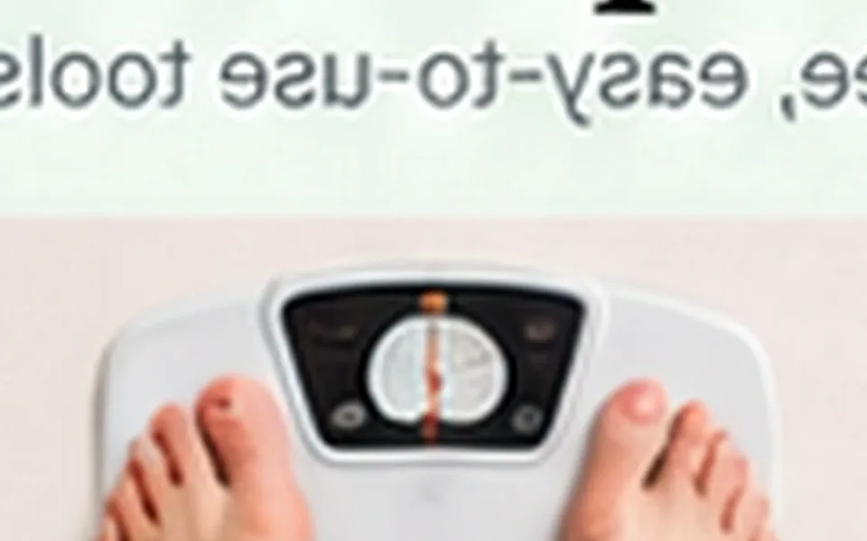

Walking After Meals: What It May Do for Blood Sugar

Quick answer
Why a short walk after eating can be a useful routine, how to start gently, and why it does not replace diabetes care.
Why Walking After Meals matters
Why a short walk after eating can be a useful routine, how to start gently, and why it does not replace diabetes care. The most useful way to approach this topic is to focus on repeatable habits, personal context, and the difference between a helpful rule of thumb and a medical diagnosis.
Health information is most useful when it reduces confusion. One number, supplement, food, or routine rarely tells the whole story, so this guide keeps the focus on practical decisions you can actually use.
What the evidence can tell us
Research and public-health guidance can help identify patterns that are useful for many adults, but individual needs still vary with age, medicines, medical conditions, pregnancy, activity level, and diet.
If a recommendation changes how you use medication, supplements, or manage a diagnosed condition, it is worth checking with a qualified clinician or pharmacist rather than relying on a generic online rule.
A simple way to put it into practice
Start with the smallest version of the habit that feels realistic. Track it lightly for one or two weeks, notice how it fits your day, and adjust the environment so the healthier option becomes easier to repeat.
The goal is consistency, not perfection. A modest routine that survives busy days is usually more useful than an extreme plan that lasts only a few days.
When to get more help
Persistent, severe, rapidly changing, or unexplained symptoms deserve proper medical follow-up. Online reading can help you prepare better questions, but it cannot examine you, review your full history, or replace testing when testing is needed.
If symptoms involve chest pain, fainting, severe breathing trouble, confusion, major bleeding, or another emergency warning sign, seek urgent medical care rather than waiting for an online tool or article.